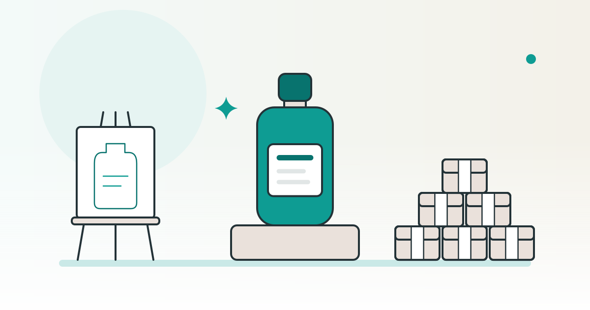

SHOPKIT コラム
自分のブランドを立ち上げるオリジナル商品の始め方と最初の数量

自分のブランドの商品を作りたいとき、何を決め、最初にどれだけ頼めばよいのでしょうか。ネットショップで扱うオリジナル商品は、見本を確かめる段階と、販売する分を注文する段階を分けて考えてみましょう。数量を決めるための質問、品質や表示、権利を確かめる所を紹介します。
この記事は、完成品のネットショップを販売している SHOPKIT が書いています。
仕入れた商品を売る形と、自分の商品を作る形の違い
まず、すでにある商品から選んで売りたいのか、素材・形・色などを決めて作りたいのかを書き出します。自分の名前を付けるという話だけで進めず、どの部分を変え、何を決める計画かを具体的にしましょう。
既存の商品をもとに変更を頼む場合も、変更できる箇所や使える名前・デザインの範囲を作り手へ確かめます。希望する仕様と、相手が作れる仕様を並べて確認してください。
作る物の目的を短い文にし、誰がどんな場面で使う物かを決めてみましょう。その目的をもとに、使う素材、寸法、使い方の条件などの質問を用意します。
すでにある商品から選んで始める場合の確認事項は、別の記事で扱っています。
関連：ネットショップの仕入れ先はどう探す？個人が使える仕入れ先と確かめること
見本と初回・追加の条件を分け、最初の数量を決める
最初の数量を決める前に、見本を頼めるか、販売用に注文する最小の数量、追加で作る条件を別々に聞きます。少ない数で頼めることを前提にせず、色やサイズを分けたときの条件も確かめてください。
| 段階 | 作り手へ聞くこと | 次へ進む前に残す物 |
|---|---|---|
| 見本 | 作成の可否、確認できる仕様、修正の方法、費用と日程 | 見本の写真、確かめた仕様、修正点と回答 |
| 初回の販売分 | 色やサイズごとの最小数量、総額に含む物、届く予定と条件 | 採用した仕様、注文する内訳、保管する場所 |
| 追加注文 | 同じ仕様で作れるか、最小数量、納期や費用が変わる条件 | 追加時に照合する仕様と、改めて確認する項目 |
見本の確認が終わったら、使えるお金と保管場所を照らし、色・サイズごとの数量を考えます。作り手が提示した最小数量を、そのまま売れる数量と読み替えないようにしましょう。
資金や保管の条件に合わない場合は、仕様の種類を絞る、作成を見送るなど、注文する前の選択肢を残します。追加の条件も、最初と同じだと決め付けずに記録してください。
価格を考える際は、製造に使うお金と、その後の発送などに使うお金を分けて整理します。
関連：ネットショップの価格の決め方｜原価・送料・手数料と税込の表示
品質と表示を、作る前に作り手と決める
採用する仕様は、寸法・素材・色・付属品・お手入れの条件などを項目にして残します。見本のどの状態を採用したかが分かるようにし、修正前の説明と混ぜないことを勧めます。
確認する項目は、商品ごとに作り手と相談しましょう。届いた物が採用した見本と違っていたときに、どこへ連絡し、何を示すかも注文前に確かめてください。
消費者庁の製品別品質表示の手引きには、繊維製品や雑貨などの区分から、品目ごとの表示を調べる案内があります。
商品の種類を特定し、必要な表示を誰が用意し、どの資料で確認するかを決めます。仕様の確認表を作っただけで、法令上の表示まで満たしたとは判断しないでください。
販売時に説明したい機能や性能は、裏付けとなる資料と使える条件を作り手に聞きます。消費者庁の景品表示法関係ガイドライン等には、比較広告や不実証広告規制などの資料への案内があります。
確認できていない効果を説明文へ足さず、表示や説明の具体的な内容で迷う点は、資料を示して担当窓口へ確かめましょう。
ブランドの名前とデザインが、ほかの権利とぶつからないか確かめる
商品に使う名前やロゴ、柄、写真について、誰が作った物かと、使用の根拠を整理します。外部へ制作を頼む場合は、商品や包装、販売ページに使える範囲を、記録に残す形で確かめてください。
自分の名前を付けることや、作り手が製造を引き受けることだけで、権利の確認を終えないようにしましょう。参考にした商品と似ている部分があれば、何を確認すべきかを専門の窓口へ相談します。
海外で作って日本へ入れる場合も、確認を分けて行います。税関の侵害物品の取締りの概要は、知的財産権を侵害する物品を、日本へ輸入してはならない貨物として説明しています。
個々の名前やデザインが侵害に当たるかは、この記事では判断しません。製造を始める前に、使いたい物と根拠資料をそろえて確認してください。
関連：ネットショップの商標登録は必要？区分の考え方・調べ方・出願の流れ
関連：ネットショップの名前の決め方｜ジャンルが伝わる名前と商標の確かめ方
作った商品の在庫と、売り切れたときの決まり
作る数が決まったら、商品と色・サイズの組み合わせごとに、注文した数と届いた数を分けて記録します。そのうえで、確認中の物や見本用に分けた物と、お客様へ販売できる物を区別しましょう。
販売を始める前に、売り切れたら販売を止めるのか、追加を検討するのかを決めておきます。作り手に再注文できるかと、いつ販売できるかは、別の確認として扱ってください。
追加を考えるときは、販売済みの内訳、手元の数、問い合わせ内容、使えるお金を見直します。追加できる数量や届く予定を改めて確かめ、販売時の案内とそろえましょう。
仕様を変えて作る場合は、前の商品と同じ説明で案内できるかを点検します。変更点が分かる記録を残し、写真や表示も一緒に照合してください。
自分で作る前に、完成したお店から始める選び方もある
自分の商品を作る計画と、すでにある商品を扱うお店から始める計画を、今決めたい内容に合わせて比べてみましょう。商品を作る工程を自分で進めたいのか、品ぞろえやお店の準備がある形を選びたいのかを整理します。
完成品のネットショップを選ぶ場合は、受け取る商品情報、仕入れ先の情報、操作や発送の説明を、提示された内容で確認してください。お店を購入すればオリジナル商品の製造まで頼めると、説明のない条件を付け足さないようにします。
どちらから始める場合も、商品の表示や権利、数量について誰が何を確かめるかを決めておきましょう。自分が決めることと、相手へ質問することを分けて、次の準備へ進めます。
よくある質問
オリジナル商品を最初に作る数は、どう決めればよいですか？
見本、初回、追加の条件を作り手に別々に聞きます。見本で仕様を確かめたうえで、使えるお金と保管場所、色やサイズの内訳から検討してください。
オリジナル商品の見本を確かめたら、何を記録に残しますか？
採用した見本の写真と仕様、修正点と回答を残しましょう。どの状態を採用したかが分かるようにし、注文する内容と対応させます。
追加で作るときも、初回と同じ条件で頼めますか？
初回と同じだと決め付けず、作れる仕様、最小数量、費用や届く予定を改めて確かめます。変更があれば、商品の説明や表示も一緒に見直してください。
※ 当事者の表示は、2026年10月15日時点のサービスページの記載に基づきます。公的資料は2026年10月27日に確認しました。消費者庁の手引きとガイドライン一覧は、2026年10月26日に確認しました。